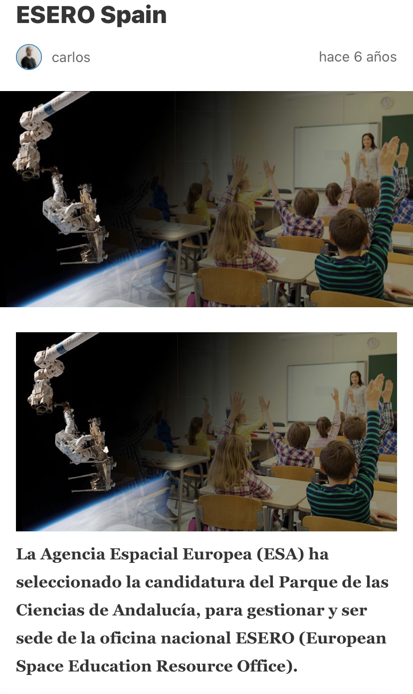

El Proyecto CanSat
CanSat es un un Proyecto europeo dirigido a estudiantes de vuestra edad, coordinada por la Agencia Espacial Europea (ESA) y las Oficinas Europeas de Recursos Educativos (ESEROs).
Los estudiantes diseñan y construyen un pequeño satélite, del tamaño de una lata de refresco, que tendrá que cumplir unas misiones. Este proyecto abarca sobre todo temas curriculares de tecnología, física y programación que veremos más adelante.
Se puede encontrar más información en la oficina ESERO Spain, ubicada en el Parque de las Ciencias de Granada:

https://www.parqueciencias.com/el-parque/
Proyecto ESERO Parque Ciencias de Granada
¿Por qué participar en este proyecto?
Al participar en el proyecto CanSat, el alumnado tendrá la oportunidad de participar en un proyecto espacial a pequeña escala, diseñando y construyendo un satélite real que tendrá que recopilar datos.
El proyecto CanSat, cumple con todas las fases de la metodología del aprendizaje basado en proyectos, cuya estrategia educativa apoya la formación en ciencia, tecnología y matemáticas fomentando así las Vocaciones Científicas en el alumnado.
Esta metodología pretende que el estudiante sea activo, explore investigue, descubra, analice, aprenda haciendo, y pueda llegar a crear su propio contenido significativo al trabajar de manera independiente y en equipo. Además de desarrollar habilidades, actitudes, conceptos, capacidades intelectuales con pensamiento crítico y reflexivo necesarios para el desarrollo de su vida personal y profesional.
Mediante un planteamiento inspirador, utilizando el espacio como contexto, el alumnado tiene la oportunidad de ser el protagonista de su propia educación, permitiendo así fomentar las competencias claves y desarrollar las habilidades parra el S. XXI.
¿Qué es un CanSat?
Un CanSat es una simulación de un satélite real integrado dentro del volumen y la forma de una lata de refresco. El desafío para el alumnado consiste en introducir en un espacio reducido los principales subsistimos de un satélite de verdad, como alimentación eléctrica, sensores y un sistema de comunicaciones. A continuación, el CanSat se lanza a una altitud aproximada de un kilómetro, dejándolo caer desde una plataforma, mediante un dron por ejemplo. Durante el descenso del CanSat, comienza su misión, la cual consistirá en la ejecución de un experimento científico, lograr un aterrizaje sin daños y el análisis de los datos recopilados durante el descenso. En este último punto podrán participar los compañeros/as de Física y Química.
Objetivos Educativos del Proyecto
Los estudiantes tendrán la oportunidad de realizar todas las fases de un proyecto espacial real, desde la elección de los objetivos de la misión hasta el diseño del CanSat, la integración de componentes, la comprobación del sistema, la preparación del lanzamiento y el análisis de los datos obtenidos. Este enfoque práctico y contextualizado permite mejorar las habilidades transversales como el pensamiento crítico, la colaboración, la resolución de problemas del mundo real y la comunicación.
Objetivos:
- Aprender de forma práctica.
- Familiarizarse con la metodología de investigación, que se utiliza en las profesiones científicas y técnicas de la vida real.
- Adquirir conocimientos elementales de tecnología, física y programación.
- Reforzar capacidades sociales, comprobando la importancia de la coordinación y el trabajo en equipo.
- Potenciar la capacidad comunicativa y expresión oral y escrita.
- Fomentar el espíritu autocrítico, la creatividad y la motivación por aprender.
Objetivos Específicos:
- Diseñar un producto tecnológico, desde su diseño y planteamiento hasta su construcción en nivel prototipo, realizando pruebas para mejorar su funcionamiento.
- Reconocer, analizar y describir los mejores materiales para construir una carcasa, un paracaídas, circuitos electrónicos, etc.
- Representar y comprender diagramas de bloques, diagramas de flujo diagramas de gantt.
- Diseño y simulación de sistemas electrónicos y comprobar su funcionamiento.
- Diseño y modelado 3D.
- Programación en diferentes lenguajes.
- Gestión y análisis de datos: representación gráfica e interpretación de resultados.
Proyecto interdisciplinar:
- Matemáticas: cálculo área del paracaídas, peso y volumen del CanSat, representación gráfica de datos obtenidos (conceptos estadísticos para su interpretación).
- Tecnología/Informática: diseño y modelado 3D, programación, diagramas de bloques, diagramas de flujo, conexiones electrónicas (sensores), microprocesadores.
- Física y Química: análisis caída del CanSat, interpretación gráfica de datos obtenidos.
- Inglés: traducir al inglés el proyecto y preparar su exposición también en inglés.
- Lengua: redacción de informes, capacidad de síntesis, comunicación oral y escrita.
- Otras: edición de vídeos, fotografías, gestión de redes sociales/blogs.
Fases del Proyecto
Fase 1: Imagina tu CanSAt. Se explicará al alumnado en qué consiste el proyecto. Se pueden poner incluso vídeos de otros proyectos elaborados por otros alumnos/as de otros centros.
Fase 2: Construye tu CanSat. Durante esta fase, el alumnado desarrollará el proyecto e irá elaborando la documentación necesaria (memoria, recopilación fotos y vídeos, etc.).
Fase 3: Entrega documentación a los departamentos implicados. El alumnado deberá entregar y exponer el informe final que deberá incluir un informe de progreso y una descripción completa de la misión CanSat, sistema y funcionalidades, donde indicará los pasos, la lógica y las medidas aplicadas para resolver los problemas que han ido apareciendo para refinar el diseño del CanSat.
Fase 4: Se celebrará el evento con el lanzamiento del CanSat.
Fase 5: Se analizarán los datos obtenidos tras el lanzamiento.
Primeros Pasos
Lo primero es motivar al alumnado y animarlos a participar en el proyecto. Será una oportunidad única que no olvidarán y todo quedará registrado para la posteridad.
En este apartado de Ediciones Anteriores de la página web CanSat podrás ver vídeos de competiciones anteriores e imágenes de diferentes CanSat.
Se pueden realizar las actividades presentadas en el cuadernillo didáctico Meet Arduino y así enganchar al grupo a la programación. Cualquier actividad relacionada con la programación, circuitos y robótica es buena opción para mostrar al alumnado cómo será realizar un proyecto CanSat.
Para realizar todos los puntos de las actividades que veremos a continuación es esencial realizar una organización y planificación del trabajo en equipo, que implique:
- Reparto de tareas, tanto a nivel individual como a nivel de grupo.
- Establecer las horas de trabajo, tanto a nivel grupal como individual (por ejemplo, tres horas a la semana grupales y dos individuales, donde se realizan tareas por separado).
- Animar y motivar al grupo para no perder el ritmo de trabajo.
Nos podemos ayudar del Diagrama de Gantt para organizar y planificar el trabajo en equipo.